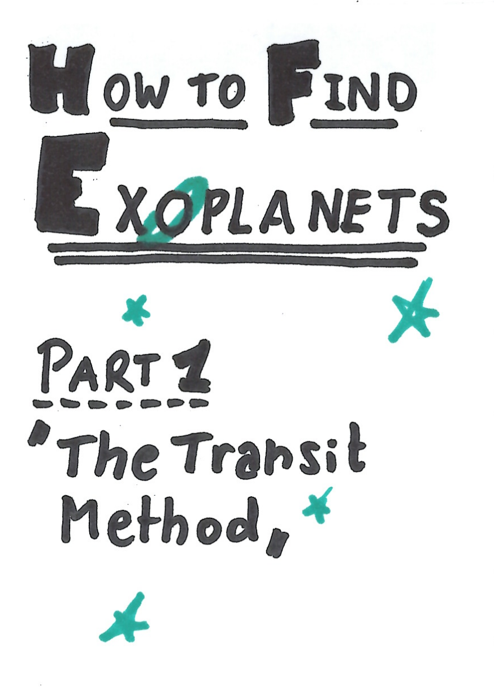

Mini Sci-Zines
Inspired by Malwine and Éléonore Mayola, I started a series of mini zines on exoplanets. I had plans to make a few of those, but stopped after the second. There’s a third one sitting in a drawer, almost finished; I might come back to it someday.
Those zines are free to print & distribute. Instructions on how to fold them (and also, how to make your own) can be found here.
Sci-Zine #1: The Transit Method
Click here to download the PDF and print it for yourself, or read it below.


More info on the transit method can be found at the Planetary Society.
Sci-Zine #2: The Radial Velocity Method
Click here to download the PDF and print it for yourself, or read it below.
More info on the radial velocity method can be found at the Planetary Society.